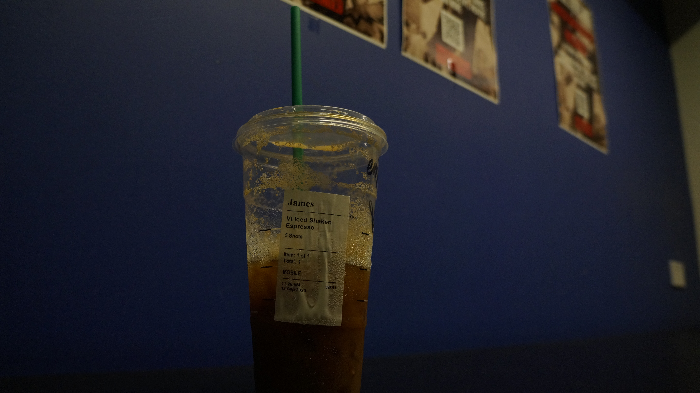
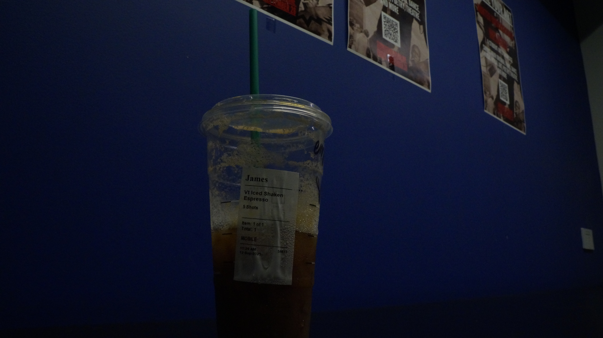
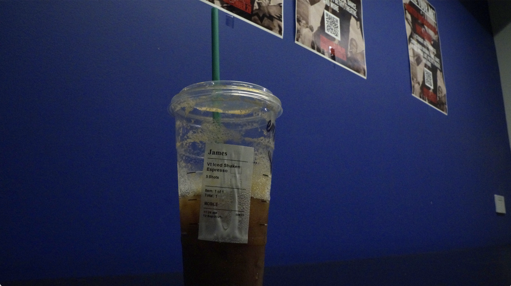

Shallow depth

Deep depth

Used focus blur
For this assignment, I focused on comparing how depth of field and basic exposure adjustments affect an image during editing. In Part 1, I photographed the same subject using both shallow and deep depth of field while keeping the composition consistent. When reviewing the images side by side, the shallow depth-of-field photo made it easier to isolate the subject from the background, while the deep depth-of-field image kept more visual information in focus. This made it clearer how depth of field influences what elements remain visually prominent when editing.Additionally, I used Photoshop’s Focus Blur to recreate a shallow depth-of-field effect. Applying the blur required more manual control than shooting with a shallow depth of field in-camera. I had to adjust the blur strength and mask areas carefully to keep the subject sharp. Compared to the in-camera image, the edited blur felt more uniform and less gradual, which highlighted the difference between digitally applied blur and optical blur created by a lens.


For Part 2, although I did not have access to the Camera Raw filter, I still examined exposure differences by comparing the original and adjusted images. The original image appeared underexposed, especially in the shadow areas. Increasing brightness and contrast helped recover some detail without significantly affecting the highlights. Straightening the image also improved the overall composition by making everything feel more balanced.
HOME